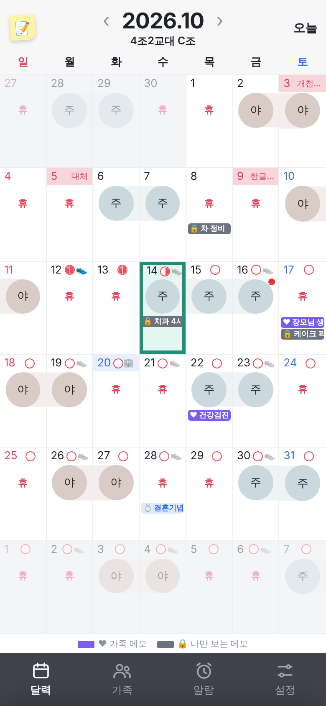
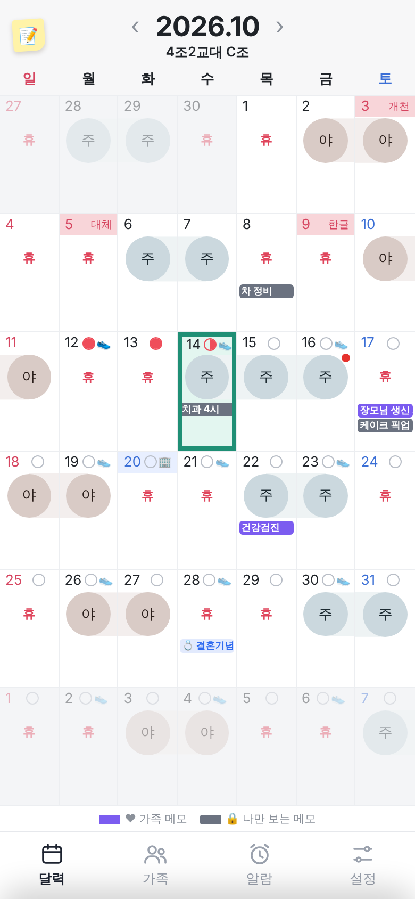

1234색(보라 = 가족 · 회색 = 나만)으로 이미 구분돼요. 아래 설명 줄에 한 번만 → 메모 글자가 2자 더 보여요
"장모님 생" → "장모님 생신", "케이크 픽" → "케이크 픽업"
"개천…" "한글…" → 개천 · 한글 (태블릿처럼 넓으면 전체 이름)
이번 달을 보고 있으면 누를 일이 없어요
진한 회색 덩어리가 없어져서 화면이 가벼워 보여요 · 다크 모드에선 지금처럼 어둡게
20일(창립기념일) — 다크 모드 색을 안 정해 둬서 생긴 작은 고장